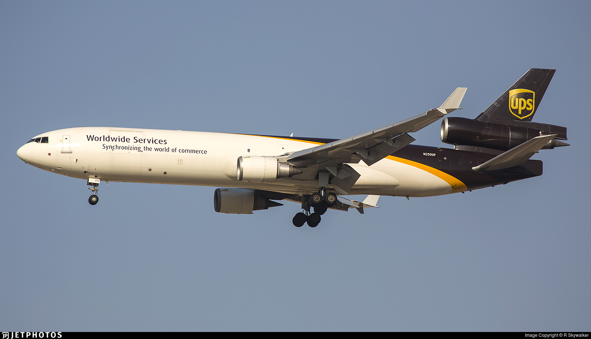

Being one of the primary methods of travel today, aircraft (and more specifically airplanes) employ many different types of physics to acheive flight. From methods of propulsion to wing shapes to airframes, physics is carefully involved and considered for all parts of flight.
What, exactly, does this site cover?
Wings help generate the force of lift, elevating the aircraft beyond just a funny-looking car. This will cover why different wing shapes are used in their respective situations.
Since they generate lift as well, airframes will be examined. I have decided to combine the wings and airframes section since there is so much overlap between them.
Common propulsion methods include reciprocating, turboprop, turbofan, turbojet, scramjet, and others. The applications of these types will be examined.
Communications between ground stations and other aircraft are sent by radio waves encoded in both analog and digital modes. These modes and their usages will be examined.